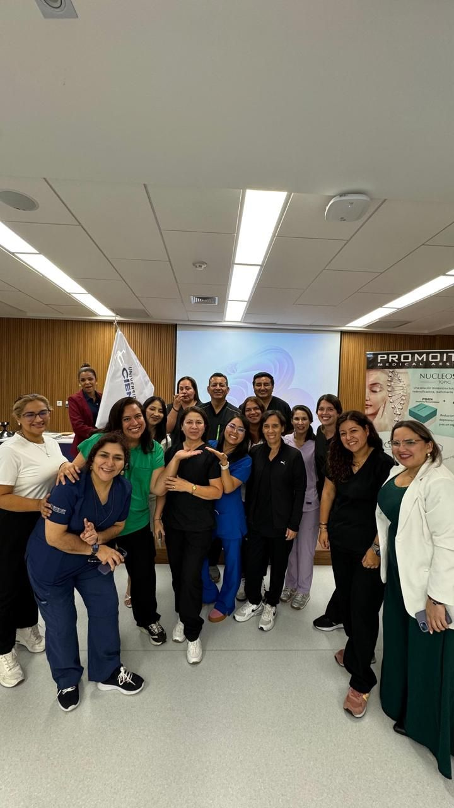
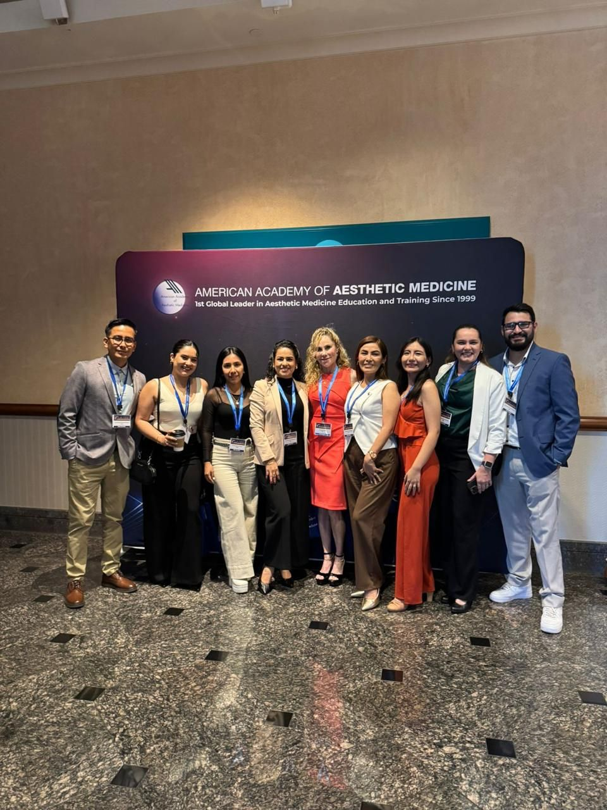
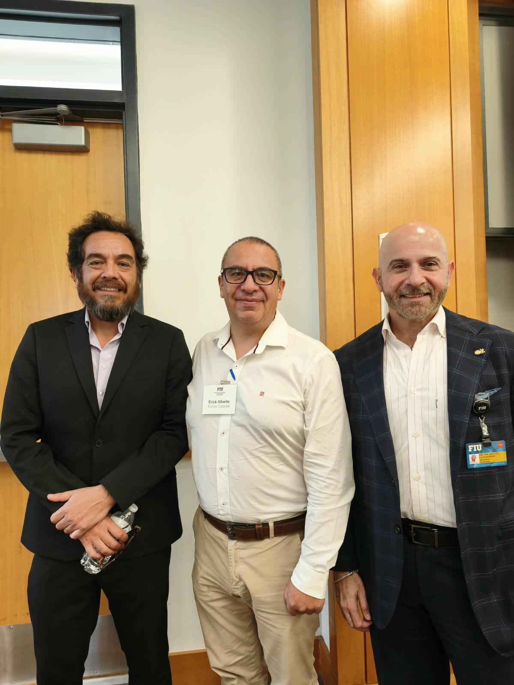
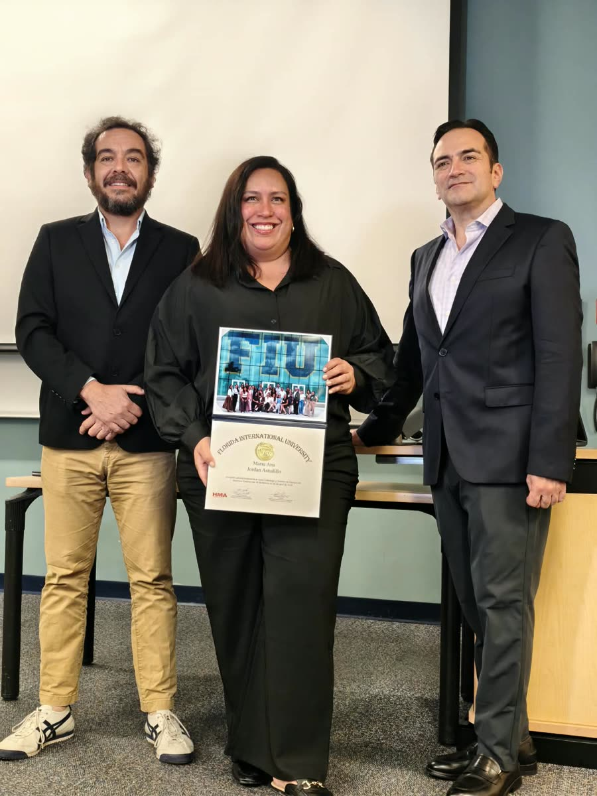
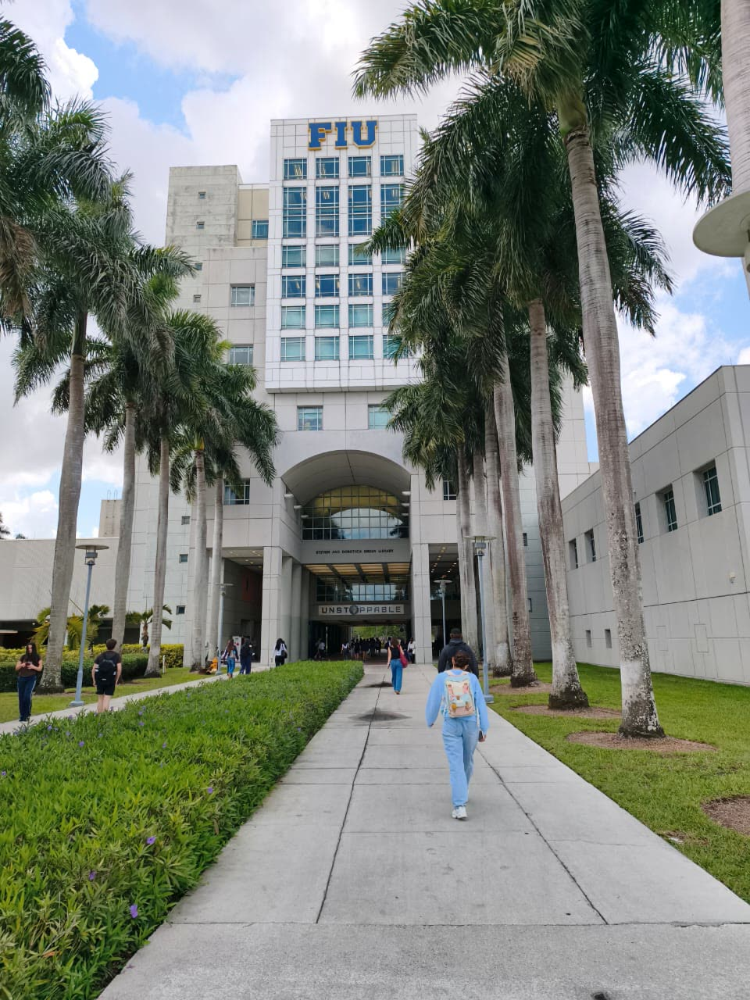
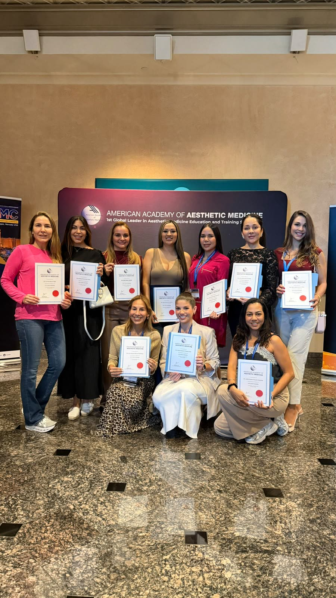
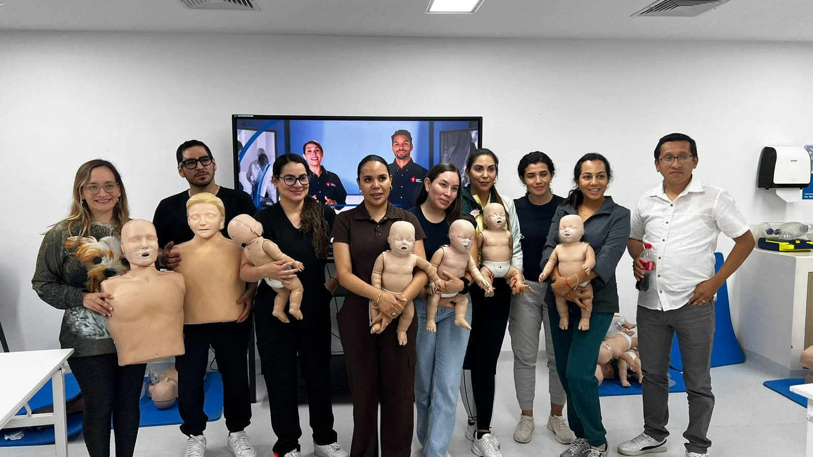
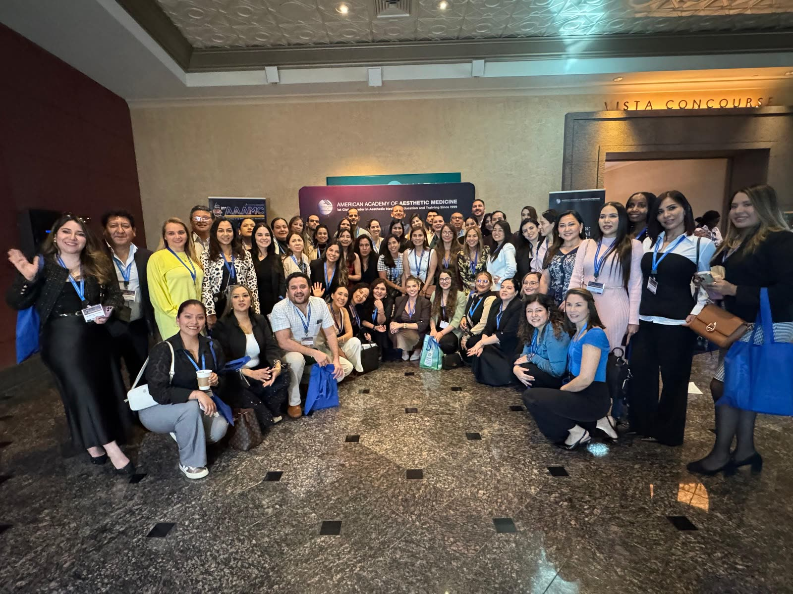

Inicio / Actividades
Actividades y eventos científicos
Congresos, cursos, talleres y jornadas para asociados y profesionales de la salud. Cada actividad indica fecha, modalidad, programa, inscripción y si otorga certificado.
Calendario
| Fecha | Actividad | Modalidad | Programa | Inscripción | Certificado |
|---|---|---|---|---|---|
| Por anunciar | Próximo curso o taller | Presencial o virtual | Se publica con la convocatoria | Desde esta página | Según la actividad |
Cuando la asociación confirme sus fechas, cada actividad tendrá aquí su programa y su enlace de inscripción.
Tipos de actividad
Congresos
Encuentros de uno o más días con ponencias, mesas de discusión y presentación de trabajos.
Cursos
Formación teórica por módulos, presencial o virtual, con evaluación al final.
Talleres
Práctica guiada en grupos pequeños, con modelos anatómicos y supervisión de docentes.
Jornadas científicas
Sesiones cortas para revisar casos, novedades y evidencia reciente.
Actividades realizadas
Visita académica a la FIU
Florida International University, Miami (Estados Unidos). Clases, recorrido por el campus y entrega de certificados a cada asociado.
American Academy of Aesthetic Medicine
Encuentro internacional con sesiones académicas y entrega de constancias a los participantes.
Clases y ponencias
Exposiciones en auditorio y aulas de la Universidad Científica del Sur, a cargo de docentes y asociados.
Talleres prácticos
Práctica con modelo anatómico y láminas de anatomía facial.

assets/fotos/dermatoscopia.jpg
assets/fotos/fiu-auditorio.jpg
assets/fotos/grupo-cientifica.jpg
assets/fotos/aaam-grupo.jpgViaje académico a Miami

assets/fotos/fiu-docentes.jpg
assets/fotos/certificado-3.jpg
assets/fotos/fiu-campus.jpg
assets/fotos/aaam-certificados.jpg
assets/fotos/taller-modelos.jpg
assets/fotos/aaam-salon.jpgEn video
Ponencias, demostraciones y prácticas de la maestría.
Docentes y ponentes
Dermatología

assets/fotos/dermatologa-2.jpg
assets/fotos/dermatologa-1.jpgPrácticas de anatomía
Prácticas con cadáveres en el laboratorio de anatomía, parte central de la formación. Los videos se muestran solo si usted lo elige.
En las demostraciones con pacientes, el rostro del paciente aparece desenfocado para proteger su identidad.
Inscripciones y certificados
La inscripción a cada actividad se hace desde esta página o escribiendo al correo de la asociación. Al confirmarla se envían el programa y las indicaciones de pago, si corresponde.
Las actividades que lo indiquen otorgan certificado o constancia de participación a quienes cumplan con la asistencia requerida.
¿Tiene formación de maestría en medicina estética?
Revise los requisitos, las categorías y los beneficios, y escríbanos para iniciar su inscripción.